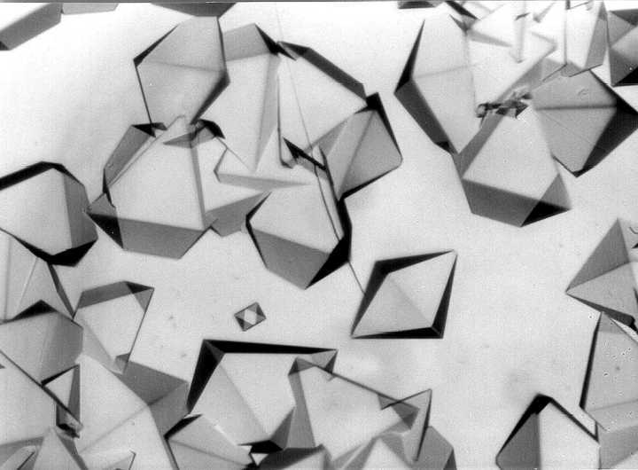

作者:理查．普雷斯頓
目錄
作者介紹
|
|
四月下尋的一個週三晚上
凱特半夜
渾身虛汗
做了一些記不清的夢
凱特感到
而且發現
到了學校後
她開始感到身體不適
但吃了醫務室的感冒藥後
感冒症狀反而
更
加
她感覺嘴巴腫漲
而且略為疼痛
最終
凱特在美術課時昏倒了
雖然在同學的幫助下清醒了一些
但...
各種症狀接連襲來
甚至開始
咚!!
少女終於失去生機，倒在地上
然而
這只是開始...
檢查結果
接下來進行了屍體組織樣本的檢查
發現腦組織當中的神經元細胞核不正常
裡面有一些帶角晶體
然而
這不可能是病毒微粒
因為病毒微粒在常規顯微鏡下是看不到的
奥絲汀在追查各個案例的線索時
發現
證實了這並非
而是人為的生物武器散播
奧絲汀在調查病毒的過程經歷種種風波
這個案件已經不是驗屍官所能處理的範圍了
為了處理這
必須要通報FBI
而FBI也發現病毒的嚴重性
並與還搞不清狀況的白宮發生激烈爭辯
辯論的最終
白宮終於意識到這是
非常危險的
傳染熱區研究中心
來自犯人的OS
因此，人類需要一個新的
眼鏡蛇病毒是由
天花
、
感冒病毒
與
一直吃 吃 吃
直到他們
如同感染了眼鏡蛇病毒的
看著拉米雷斯這個男孩的
使得奧絲汀想起了凱特
腦中浮現了想法：
這是「萊希-尼亨症候群」
奧絲汀認為
眼鏡蛇病毒就是讓感染者得到
「萊希-尼亨症候群」
專案小組便以此為線索
找到了進行相關疾病研究的
「白鷗生物科技公司」
並發現前員工「柯普」從「白鷗」偷出了
生物反應器與病毒原種
靠著線索與運氣的引導
FBI探員們找到了柯普的住處
科普為了逃跑，擊碎了⽣物反應器
FBI探員破牆而入
與科普展開了追逐戰
從公寓下的隧道追入地鐵站
最終到了一個廢棄區...
經過一翻對峙後，奧絲汀成功將科普逮捕
此時的科普明顯也感染了
他的身體也開始顫抖
出現「萊希-尼亨症候群」...
結語
整本小說節奏十分明快
對病毒症狀也有鉅細靡遺的描寫
鮮活到了
也警醒世人要對生化武器有所防備
額外的喇勒
看這犯人科普的OS
感覺還有點道理
但我怕死
超怕der~~
所以還是
為了人類衛生安全而努力的各位
You can select from different transitions, like:
None -
Fade -
Slide -
Convex -
Concave -
Zoom
reveal.js comes with a few themes built in:
Black
(default) -
White
-
League
-
Sky
-
Beige
-
Simple
Serif
-
Blood
-
Night
-
Moon
-
Solarized